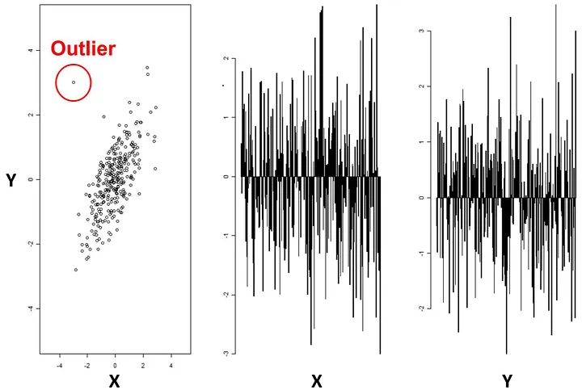
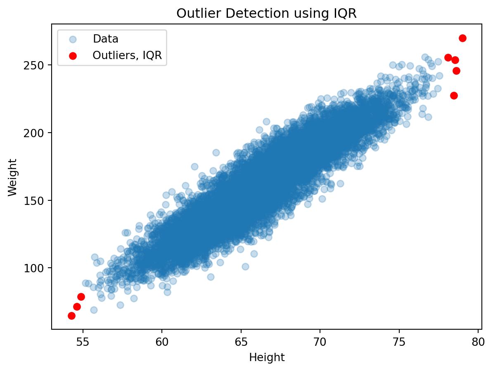
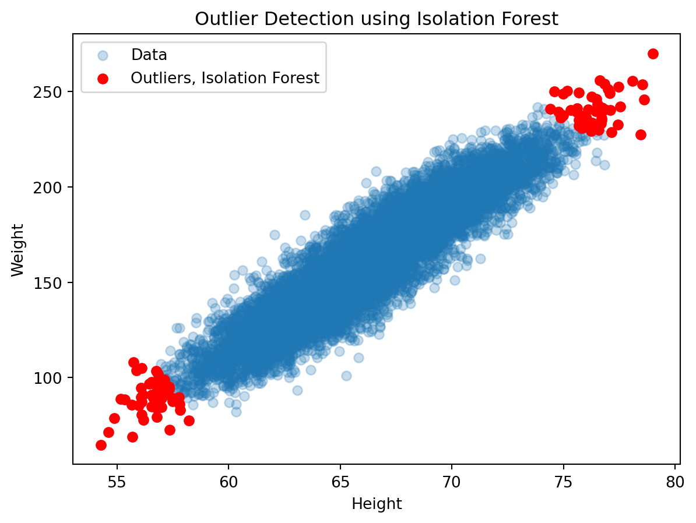
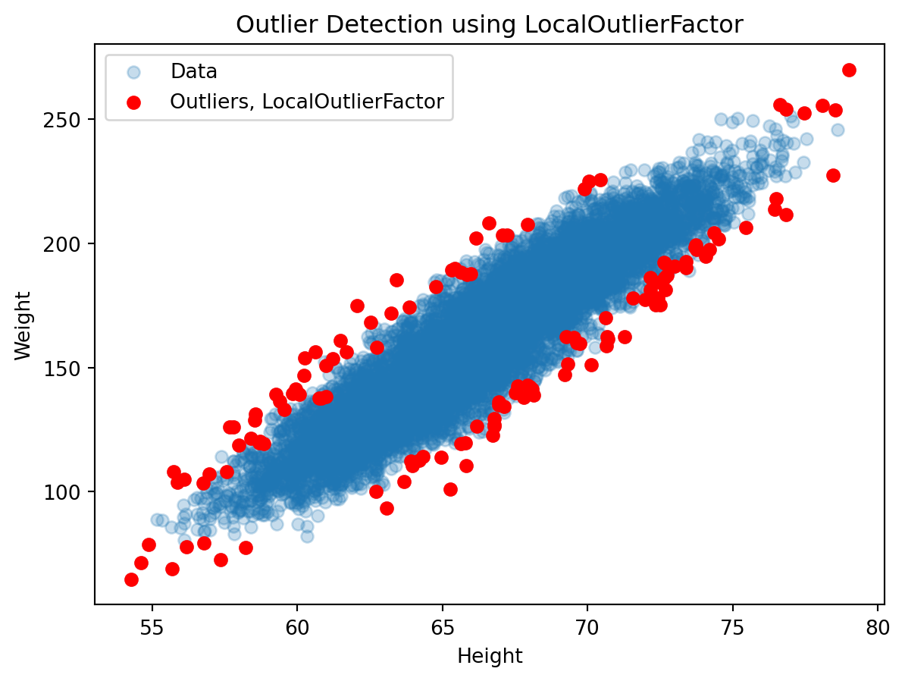
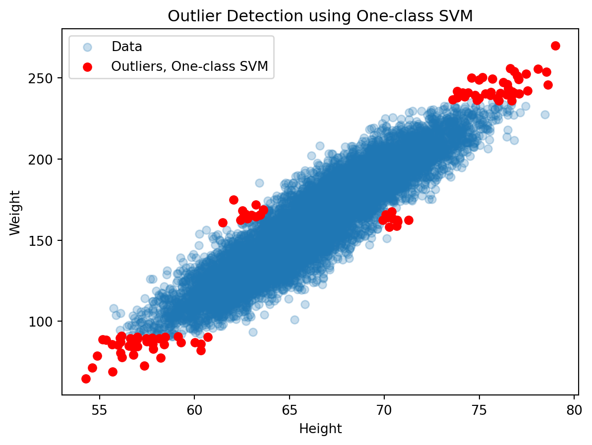
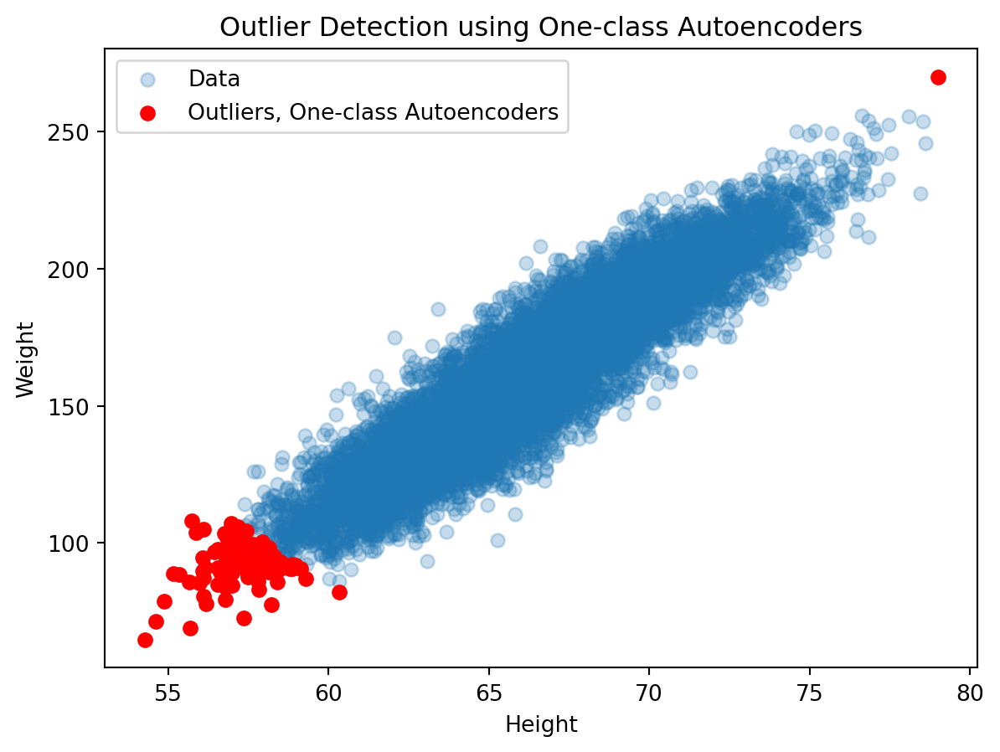

{kind=link}
import pandas as pd
import numpy as np
import matplotlib.pyplot as plt
from sklearn.ensemble import IsolationForest
from sklearn.preprocessing import StandardScaler
from sklearn.neighbors import LocalOutlierFactor
from sklearn.svm import OneClassSVM
import torch
import torch.nn as nn
import torch.optim as optim
from torch.utils.data import DataLoader, Dataset
Anomaly/Outlier Detection: An Overview
Anomaly detection, also known as outlier detection, is a process in data analysis where unusual patterns, items, or events in a dataset are identified. These anomalies are often referred to as outliers—data points that deviate significantly from the majority of the data. Anomaly detection is crucial as these outliers can indicate critical incidents, such as bank fraud, structural defects, system faults, or errors in text data.
Key Concepts
Anomalies:
A data point or a pattern that does not conform to the expected behavior. Anomalies can be:
Point Anomalies: Individual data points that are significantly different from the rest of the data. Contextual Anomalies: Anomalies that are context-specific. These might not be outliers in a different context. Collective Anomalies: A group of data points that collectively deviate from the overall data pattern but might not be anomalies when considered individually.
Outlier:
Often used interchangeably with anomalies, outliers are data points that differ drastically from the rest of the dataset.
Techniques in Anomaly Detection
Anomaly detection in machine learning can be approached in various ways:
Statistical Methods:
- Simple statistical metrics like mean, median, standard deviation, and interquartile ranges are used to identify outliers.
- Methods like Z-score and Grubbs’ test can flag data points that deviate from the expected distribution.
Machine Learning Methods:
Supervised Learning: This requires a dataset with labeled anomalies. Algorithms like logistic regression, support vector machines, or neural networks can be trained to recognize and predict anomalies.
Unsupervised Learning: Useful when you don’t have labeled data. Algorithms like k-means clustering, DBSCAN, or autoencoders can detect anomalies by understanding the data’s inherent structure and distribution.
Semi-Supervised Learning: Involves training on a primarily normal dataset to understand the pattern of normality, against which anomalies can be detected.
Proximity-Based Methods:
These methods identify anomalies based on the distance or similarity between data points. For example, k-nearest neighbors (KNN) can be used to detect points that are far from their neighbors.
Density-Based Methods:
Techniques like Local Outlier Factor (LOF) focus on the density of the area around a data point. Anomalies are typically located in low-density regions.
Clustering-Based Methods:
Algorithms like K-means or Hierarchical Clustering can group similar data together. Points that do not fit well into any cluster may be considered anomalies.
Applications of Anomaly Detection
Fraud Detection: In banking and finance, detecting unusual transactions that could indicate fraud.
Intrusion Detection: In cybersecurity, identifying unusual patterns that could signify a security breach.
Fault Detection: In industrial settings, detecting irregularities in machine or system operations to preempt failures.
Health Monitoring: In healthcare, identifying unusual patterns in patient data that could indicate medical issues.
Quality Control: In manufacturing, detecting products that don’t meet quality standards.
Anomaly Detection Method with Weight and Height Dataset
Importing libraries and loading data
df = pd.read_csv("R:/Blog/posts/outlier-detection/weight-height.csv")
FEATURE_COLUMNS = ['Height', 'Weight']
print(df.shape)
df.sample(5).T(10000, 3)| 6632 | 8938 | 5752 | 1552 | 5076 | |
|---|---|---|---|---|---|
| Gender | Female | Female | Female | Male | Female |
| Height | 68.780123 | 69.470987 | 61.822956 | 70.837159 | 65.065145 |
| Weight | 176.450818 | 178.981464 | 151.621748 | 201.403402 | 156.163127 |
Interquartile range (IQR)
def plot_results(df, df0, method_str="IQR"):
# Plotting the data
plt.scatter(df['Height'], df['Weight'], label='Data', alpha=0.25)
plt.scatter(df0['Height'], df0['Weight'], color='r', alpha=1, label=f'Outliers, {method_str}')
plt.xlabel('Height')
plt.ylabel('Weight')
plt.title(f'Outlier Detection using {method_str}')
plt.legend()
plt.show();
return Nonedef detect_outliers_iqr(dataframe, column):
'''Uses Interquartile range (IQR) method to detect outliers'''
# Calculate the first quartile (Q1)
Q1 = dataframe[column].quantile(0.25)
# Calculate the third quartile (Q3)
Q3 = dataframe[column].quantile(0.75)
# Calculate the interquartile range (IQR)
IQR = Q3 - Q1
# Define the lower and upper bounds for outliers
lower_bound = Q1 - 1.5 * IQR
upper_bound = Q3 + 1.5 * IQR
# Find the outliers
dataframe[f'outliers_iqr_{column}'] = ((dataframe[column] < lower_bound) | (dataframe[column] > upper_bound)).astype(int)
return dataframefor col in ['Weight', 'Height']:
df = detect_outliers_iqr(df, col)
df0 = df[df['outliers_iqr_Height']+df['outliers_iqr_Weight']>0].copy()
print(df0.shape)
plot_results(df, df0, method_str="IQR")(8, 5)
Isolation forest
def detect_outliers_isolation_forest(dataframe):
# Create an Isolation Forest instance
clf = IsolationForest(contamination=0.01, n_estimators=100, bootstrap=False, random_state=42)
# Fit the model
clf.fit(dataframe[FEATURE_COLUMNS])
# Predict outliers
outliers = clf.predict(dataframe[FEATURE_COLUMNS])
# Create a boolean mask for outliers
outliers_mask = outliers == -1
# Mark the outliers
dataframe[f'outliers_iforest'] = (outliers_mask).astype(int)
return dataframe
# Detect outliers using the IF method on column
df = detect_outliers_isolation_forest(df)
print("Outliers:")
# Plotting the data
df0 = df[df['outliers_iforest']>0].copy()
print(df0.shape)
plot_results(df, df0, method_str="Isolation Forest")
df.describe()Outliers:
(100, 6)
| Height | Weight | outliers_iqr_Weight | outliers_iqr_Height | outliers_iforest | |
|---|---|---|---|---|---|
| count | 10000.000000 | 10000.000000 | 10000.0000 | 10000.000000 | 10000.000000 |
| mean | 66.367560 | 161.440357 | 0.0001 | 0.000800 | 0.010000 |
| std | 3.847528 | 32.108439 | 0.0100 | 0.028274 | 0.099504 |
| min | 54.263133 | 64.700127 | 0.0000 | 0.000000 | 0.000000 |
| 25% | 63.505620 | 135.818051 | 0.0000 | 0.000000 | 0.000000 |
| 50% | 66.318070 | 161.212928 | 0.0000 | 0.000000 | 0.000000 |
| 75% | 69.174262 | 187.169525 | 0.0000 | 0.000000 | 0.000000 |
| max | 78.998742 | 269.989699 | 1.0000 | 1.000000 | 1.000000 |
Local Outlier Factor
def detect_outliers_lof(dataframe):
# Create an LOF instance
lof = LocalOutlierFactor(n_neighbors=20, contamination='auto')
# Fit the model and predict outlier scores
outlier_scores = lof.fit_predict(dataframe[FEATURE_COLUMNS])
# Create a boolean mask for outliers
outliers_mask = outlier_scores == -1
# Mark the outliers
dataframe[f'outliers_lof'] = (outliers_mask).astype(int)
return dataframe
# Detect outliers using the LOF method on
df = detect_outliers_lof(df)
print("Outliers:")
# Plotting the data
df0 = df[df['outliers_lof']+df['outliers_lof']>0].copy()
print(df0.shape)
plot_results(df, df0, method_str="LocalOutlierFactor")
df.describe()Outliers:
(132, 7)
| Height | Weight | outliers_iqr_Weight | outliers_iqr_Height | outliers_iforest | outliers_lof | |
|---|---|---|---|---|---|---|
| count | 10000.000000 | 10000.000000 | 10000.0000 | 10000.000000 | 10000.000000 | 10000.000000 |
| mean | 66.367560 | 161.440357 | 0.0001 | 0.000800 | 0.010000 | 0.013200 |
| std | 3.847528 | 32.108439 | 0.0100 | 0.028274 | 0.099504 | 0.114136 |
| min | 54.263133 | 64.700127 | 0.0000 | 0.000000 | 0.000000 | 0.000000 |
| 25% | 63.505620 | 135.818051 | 0.0000 | 0.000000 | 0.000000 | 0.000000 |
| 50% | 66.318070 | 161.212928 | 0.0000 | 0.000000 | 0.000000 | 0.000000 |
| 75% | 69.174262 | 187.169525 | 0.0000 | 0.000000 | 0.000000 | 0.000000 |
| max | 78.998742 | 269.989699 | 1.0000 | 1.000000 | 1.000000 | 1.000000 |
One-class SVM
def detect_outliers_svm(dataframe):
# Create a One-Class SVM instance
svm = OneClassSVM(nu=0.01)
# Fit the model
svm.fit(dataframe[FEATURE_COLUMNS])
# Predict outlier scores
outlier_scores = svm.decision_function(dataframe[FEATURE_COLUMNS])
# Create a boolean mask for outliers
outliers_mask = outlier_scores < 0
# Mark the outliers
dataframe[f'outliers_svm'] = (outliers_mask).astype(int)
return dataframe
# Detect outliers using the SVM method
df = detect_outliers_svm(df)
print("Outliers:")
# Plotting the data
df0 = df[df['outliers_svm']>0].copy()
print(df0.shape)
plot_results(df, df0, method_str="One-class SVM")
df.describe()Outliers:
(101, 8)
| Height | Weight | outliers_iqr_Weight | outliers_iqr_Height | outliers_iforest | outliers_lof | outliers_svm | |
|---|---|---|---|---|---|---|---|
| count | 10000.000000 | 10000.000000 | 10000.0000 | 10000.000000 | 10000.000000 | 10000.000000 | 10000.000000 |
| mean | 66.367560 | 161.440357 | 0.0001 | 0.000800 | 0.010000 | 0.013200 | 0.010100 |
| std | 3.847528 | 32.108439 | 0.0100 | 0.028274 | 0.099504 | 0.114136 | 0.099995 |
| min | 54.263133 | 64.700127 | 0.0000 | 0.000000 | 0.000000 | 0.000000 | 0.000000 |
| 25% | 63.505620 | 135.818051 | 0.0000 | 0.000000 | 0.000000 | 0.000000 | 0.000000 |
| 50% | 66.318070 | 161.212928 | 0.0000 | 0.000000 | 0.000000 | 0.000000 | 0.000000 |
| 75% | 69.174262 | 187.169525 | 0.0000 | 0.000000 | 0.000000 | 0.000000 | 0.000000 |
| max | 78.998742 | 269.989699 | 1.0000 | 1.000000 | 1.000000 | 1.000000 | 1.000000 |
Autoencoder
class Autoencoder(nn.Module):
def __init__(self, input_dim, hidden_dim):
super(Autoencoder, self).__init__()
self.encoder = nn.Sequential(
nn.Linear(input_dim, 2*hidden_dim),
nn.ReLU(),
nn.Linear(2*hidden_dim, hidden_dim),
nn.ReLU()
)
self.decoder = nn.Sequential(
nn.Linear(hidden_dim, 2*hidden_dim),
nn.ReLU(),
nn.Linear(2*hidden_dim, input_dim),
nn.Sigmoid()
)
def forward(self, x):
encoded = self.encoder(x)
decoded = self.decoder(encoded)
return decoded
class OutlierDataset(Dataset):
def __init__(self, data):
self.data = torch.tensor(data, dtype=torch.float32)
def __len__(self):
return len(self.data)
def __getitem__(self, idx):
return self.data[idx]
def detect_outliers_autoencoder(dataframe, hidden_dim=16, num_epochs=10, batch_size=32):
# Convert dataframe to standard scaled numpy array
scaler = StandardScaler()
data = scaler.fit_transform(dataframe[FEATURE_COLUMNS])
# Create an outlier dataset
dataset = OutlierDataset(data)
# Split data into training and validation sets
val_split = int(0.2 * len(dataset))
train_set, val_set = torch.utils.data.random_split(dataset, [len(dataset) - val_split, val_split])
train_loader = DataLoader(train_set, batch_size=batch_size, shuffle=True)
val_loader = DataLoader(val_set, batch_size=batch_size)
# Initialize the autoencoder model
input_dim = data.shape[1]
model = Autoencoder(input_dim, hidden_dim)
# Set the loss function and optimizer
criterion = nn.MSELoss()
optimizer = optim.Adam(model.parameters(), lr=3e-2, weight_decay=1e-8)
# Train the autoencoder
for epoch in range(num_epochs):
train_loss = 0.0
val_loss = 0.0
# Training
model.train()
for batch in train_loader:
# Zero the gradients
optimizer.zero_grad()
# Forward pass
outputs = model(batch)
# Compute the reconstruction loss
loss = criterion(outputs, batch)
# Backward pass and optimization
loss.backward()
optimizer.step()
train_loss += loss.item() * batch.size(0)
# Validation
model.eval()
with torch.no_grad():
for batch in val_loader:
outputs = model(batch)
loss = criterion(outputs, batch)
val_loss += loss.item() * batch.size(0)
train_loss /= len(train_set)
val_loss /= len(val_set)
print(f'Epoch {epoch+1}/{num_epochs}: Train Loss: {train_loss:.4f}, Val Loss: {val_loss:.4f}')
# Calculate reconstruction error for each data point
reconstructed = model(dataset.data)
mse_loss = nn.MSELoss(reduction='none')
error = torch.mean(mse_loss(reconstructed, dataset.data), dim=1)
# Define a threshold for outlier detection
threshold = np.percentile(error.detach().numpy(), 99)
# Create a boolean mask for outliers
outliers_mask = (error > threshold)
# Mark the outliers
dataframe[f'outliers_autoenc'] = (outliers_mask)
dataframe[f'outliers_autoenc'] = dataframe[f'outliers_autoenc'].astype(int)
return dataframe
# Detect outliers using the autoencoder method
df = detect_outliers_autoencoder(df)
print("Outliers:")
# Plotting the data
df0 = df[df['outliers_autoenc']>0].copy()
print(df0.shape)
plot_results(df, df0, method_str="One-class Autoencoders")
df.describe()Epoch 1/10: Train Loss: 0.5812, Val Loss: 0.5335
Epoch 2/10: Train Loss: 0.5608, Val Loss: 0.5325
Epoch 3/10: Train Loss: 0.5601, Val Loss: 0.5323
Epoch 4/10: Train Loss: 0.5599, Val Loss: 0.5323
Epoch 5/10: Train Loss: 0.5600, Val Loss: 0.5322
Epoch 6/10: Train Loss: 0.5599, Val Loss: 0.5324
Epoch 7/10: Train Loss: 0.5604, Val Loss: 0.5325
Epoch 8/10: Train Loss: 0.5600, Val Loss: 0.5322
Epoch 9/10: Train Loss: 0.5597, Val Loss: 0.5321
Epoch 10/10: Train Loss: 0.5597, Val Loss: 0.5322
Outliers:
(100, 9)
| Height | Weight | outliers_iqr_Weight | outliers_iqr_Height | outliers_iforest | outliers_lof | outliers_svm | outliers_autoenc | |
|---|---|---|---|---|---|---|---|---|
| count | 10000.000000 | 10000.000000 | 10000.0000 | 10000.000000 | 10000.000000 | 10000.000000 | 10000.000000 | 10000.000000 |
| mean | 66.367560 | 161.440357 | 0.0001 | 0.000800 | 0.010000 | 0.013200 | 0.010100 | 0.010000 |
| std | 3.847528 | 32.108439 | 0.0100 | 0.028274 | 0.099504 | 0.114136 | 0.099995 | 0.099504 |
| min | 54.263133 | 64.700127 | 0.0000 | 0.000000 | 0.000000 | 0.000000 | 0.000000 | 0.000000 |
| 25% | 63.505620 | 135.818051 | 0.0000 | 0.000000 | 0.000000 | 0.000000 | 0.000000 | 0.000000 |
| 50% | 66.318070 | 161.212928 | 0.0000 | 0.000000 | 0.000000 | 0.000000 | 0.000000 | 0.000000 |
| 75% | 69.174262 | 187.169525 | 0.0000 | 0.000000 | 0.000000 | 0.000000 | 0.000000 | 0.000000 |
| max | 78.998742 | 269.989699 | 1.0000 | 1.000000 | 1.000000 | 1.000000 | 1.000000 | 1.000000 |